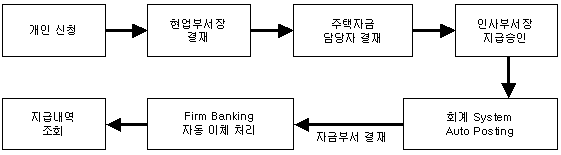
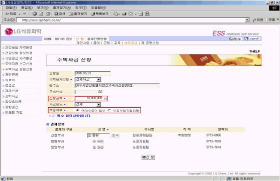

| Ⅰ. 개요 및 신청절차 |
| 1. 개요 |
| 주택자금 신규신청은 개인이 ESS상에서 신청하고 증빙서류는 현업부서장의 결재를 거쳐 주관부서로 제출한다. |
| |
| 2. 절차 |
|  |
|
| |
| |
| Ⅱ. 화면사용법 및 유의사항 |
| <그림 1. 주택자금 신청 화면> |
|  |
| |
| 1) 신청금액 : 최대금액 이내로 신청하려는 금액을 입력. |
| - 주택융자 형태/근속년수에 따른 최대 신청금액이 자동적으로 보여짐. |
| - 최대금액을 초과한 금액은 입력 불가능. |
| 2) 보증여부 : 연대보증인 2명 or 보증보험 가입 희망을 선택한다. |
| 3) 주택자금을 신청한 후 수정 및 삭제를 할 경우에는 차상위 결재자(인사부서 부서장)의 결재가 |
| 이루어지기 전까지만 가능하다. |
|
| |
| |
| Ⅲ. 제도소개 |
| 1. 신청 |
| 구분 |
세부내용 |
융자신청
대상자 |
- 만2년(구입:3년)이상 근속한 무주택 기혼사원
- 만2년(구입:3년)이상 근속하고 부모를 부양하고 본인 및 부모가 무주택인 미혼사원
- 만2년(구입:3년)이상 근속한 미혼자로서 결혼일이 확정된 경우 소정의 증빙서류를
첨부한 사원 |
| 융자범위 |
- 출퇴근 가능지역(여수,순천)에 주택을 구입(또는 신축)하거나
전세입주(임차)하는 경우 |
신청제외
대상자 |
① 신청일 현재 배우자 또는 동거부양중인 직계비속의 명의로 주택이 있는 경우
② 구입 또는 전세(임차) 주택이 근무지와 동일지역 내 위치하지 아니한 경우
③ 전세계약의 신규 또는 갱신 체결시기가 아닌 경우
④ 상환 능력이 없다고 인정되는 경우
⑤ 이중수혜 불가
⑥ 촉탁, 용역 및 일용직 사원인 경우 |
|
| |
| 2. 융자 |
| 구분 |
세부내용 |
| 융자한도 |
- 1인 1회에 한함.
(단, 전세금 융자를 받은 자가 주택 구입시는 해당 주택구입자금
융자금액에서 기 융자 받은 전세금의 차액을 융자 받을 수 있다.) |
| 융자금액 |
| 구분 |
근속 |
융자금액 |
| 전세금 |
2년 이상 |
1,200만원 |
| 주택구입 |
3년 이상 ~ 5년 미만 |
1,300만원 |
| 5년 이상 ~ 7년 미만 |
1,800만원 |
| 7년 이상 |
2,000만원 |
|
| 융자기간 |
- 최장 10년
(단, 상환시점부터 정년퇴직시 까지 잔여기간을 초과할 수 없다.) |
| 대상자선정 |
- 일자 : 융자신청 접수마감일로부터 10일 이내에 심사하여 결정한다.
- 선정기준 : 입사일자(근속년수), 본인 또는 배우자의 직계 존속 동거(부양)여부
등을 고려하여 융자를 순차적으로 시행한다. |
|
| |
| 3. 상환 |
| 구분 |
세부내용 |
| 상환방법 |
① 융자기간동안 매월 급여에서 균등 분할하여 상환한다.
② 융자지급월 익월부터 상환한다.
③ 본인의 희망에 따라 미상환 융자금의 전액을 상환기간 이전에 상환할 수 있다. |
| 이자율 |
| 년 1% |
(단위 : 원) |
| 구분 |
월상환액(10년) |
| 원금상환 |
이자 |
계 |
| 1,200만원 |
100,000 |
5,042 |
105,042 |
| 1,300만원 |
108,334 |
5,462 |
113,796 |
| 1,800만원 |
150,000 |
7,562 |
157,562 |
| 2,000만원 |
166,667 |
8,403 |
175,070 |
|
|
융자잔액
일시상환 |
다음의 상환에 해당되는 경우에는 미상환금액을 즉시 상환하여야 한다.
① 융자금을 본래의 목적이외의 용도로 사용하였을 때
② 무주택자 아닌 자가 융자금을 받은 것으로 판명되었을 때
③ 상환 완료 이전에 퇴직하였을 때
④ 기일내 소정의 구비서류를 회사에 제출치 않았을 때
⑤ 3개월 이상분의 분할 상환금을 연체하였을 때
단, 업무상 부상 또는 질병으로 인한 요양기간 및 업무외 부상 또는 질병으로
인하여 회사가 인정한 휴직기간은 제외한다.
⑥ 주택구입자금으로 융자금 수혜를 받은 자가 구입주택에 거주치 않고 전세(임대)
조처하였을 때
⑦ 사택에 입주하였을 때
⑧ 기타 허위서류를 제출하여 융자를 받은 것으로 판명되었을 때 |
|
|
| |
| |
| Ⅵ. 제출서류 |
| 1. 제출서류 |
| |
구입자금융자시 |
전세자금융자시 |
융자금
지급시 |
가. 주택자금융자계약서 1부(소정양식)
나. 각서 1부(소정양식)
다. 주민등록등본 1부(동사무소)
라. 인감증명서 1부(동사무소)
마. 지방세 미과세 증명 1부(시청민원실)
바. 인보증 또는 보증보험(a,b중 택일)
a. 연대보증인 2인
① 재산세과세 증명서 각1부
- 최근1년간 납세 30,000원이상
② 인감증명서 각1부
③ 융자계약서에 인감날인,서명날인 기재
b. 생활안정자금보증보험가입
: 도장 및 보험료 지참.
사. 매매계약서 또는 건축허가서(사본) |
가. 좌동
나. 좌동
다. 좌동
라. 좌동
마. 좌동
바. 좌동
사. 전세(임대차)계약서 사본 |
융자금
지급후
2개월이내 |
가. 등기부등본 1부(구입주택소재지)
(불가항력사유로 입주시기가 늦어질 경우
입주후 1개월이내) |
가. 주민등록등본 1부
(전세주택소재지)
|
| 특기사항 |
허위서류를 제출하여 융자를 받은 것으로 판명되었을 때에는 징계위원회 회부 엄중
문책함. |
|
| ☞ 제출서류 미비시 지급 보류함. |
| |
| 2. 보증보험 |
| 구분 |
세부내용 |
보증보험
가입방법 |
- 개인 도장 및 보험료을 주택자금 담당자에게 제출
(가입신청서를 별도로 작성하지 않음) |
| 보증보험료 |
| ※ 가입기간에 따라 보험료가 변동될 수 있습니다. |
| 대출금액 |
보증보험료 |
대출금액 |
보증보험료 |
| 500만원 |
166,470 |
1,300만원 |
432,910 |
| 600만원 |
199,770 |
1,400만원 |
466,220 |
| 700만원 |
233,080 |
1,500만원 |
499,520 |
| 800만원 |
266,390 |
1,600만원 |
532,830 |
| 900만원 |
299,680 |
1,700만원 |
566,140 |
| 1,000만원 |
332,990 |
1,800만원 |
599,430 |
| 1,100만원 |
366,300 |
1,900만원 |
632,740 |
| 1,200만원 |
399,600 |
2,000만원 |
666,050 |
|
|
| 기타 |
- 가능한 보증보험으로 가입하여 주시기 바랍니다.
- 퇴직금 중간정산을 받은 경우 반드시 보증보험으로 가입하여야 합니다.
(인보증 불가)
- 송부한 계약서의 뒷장 날인부분은(본인, 보증인) 필히 인감도장으로 날인 하셔야 합니다. |
|
| |
|